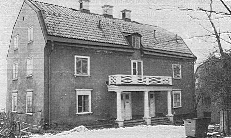
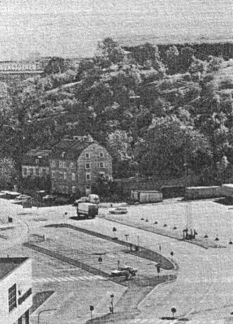
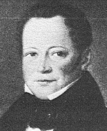
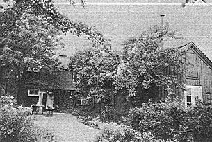

|
Ur Malmgårdarna i Stockholm, Birgit Lindberg, 1985
Patons malmgård
|
Få människor känner till Patons eller Funchs malmgård, men talar man om Fåfängan, då vet alla vilket
område det rör sig om. Malmgården ligger ännu kvar, men trots närheten till den brusande trafiken på
Danviksbron på den ena sidan och Viking Lines båtar vid Tegelviken på den andra sidan ligger huset i
skymundan. Går man närmare ser man att det är fyra våningar högt och har brutet tak samt att
entrén inramas av kolonner, som bär upp en balkong.
Områdets historia börjar på 1600-talet. Då byggdes här på berget ovanför en stjärnskans som
tillsammans med Djurgårdens skans skulle bevaka inloppet. När skansen senare förlorade i betydelse
kom andra ägare.
|
|

|
|
1774 köpte grosshandlare Fredrik Lundin tomt vid Masthamnen och "ett högt och ofruktbart berg",
där han anlade sin malmgård och Fåfänga. Han köpte alltså dels bastionsområdet, dels berg av
Danviken som ägde stora markområden. Sitt lusthus anlade Lundin på bastionens grund. Vad är då
Fåfänga? Enligt Lundin-Strindberg är Fåfänga i Stockholm ett "lusthus på berg med vidsträckt utsikt,
där ägarna stundom samlade sina vänner och kalasade med dem". Vid lusthuset anlade Lundin en
trädgård. Terrassmurar kunde han bygga av stenen från den år 1659 uppförda befästningen. Väg upp
hade han redan. Den anlades av ryska krigsfångar peståret 1710. Uppe på krönet finns även kvar några
gamla hus, lägenheten Bergshyddan. Den äldsta delen av dessa hus fanns redan 1779, kanske redan på
1600-talet. 1863 flyttades en större, trähusdel, som var byggd på 1830-talet, och sammanfogades med
det mindre, äldre trähuset, så som vi ser det än i dag.
På en ägokarta från 1774 ser man att både berget och stora delar mark i väster och i söder samt
en triangelformad del norr om berget tillhörde Lundin. Men länge fick inte Lundin njuta av sin
Fåfänga. Han blev inblandad i en konkurs år 1780 och flydde till Norge. Då utbjöds hela det
stora området till försäljning.
|
|

|
|

|
|
Under de kommande 40 åren bytte egendomen ofta ägare - Anders Plomgrens stärbhus,
grosshandlarna Daniel Asplund, Carl Magnus Friis och Carl Petter Friis. År 1839 köpte den skotske
grosshandlaren och skeppsredaren James Paton berget, lusthuset, malmgården och alla övriga hus.
Daniel Asplund hade nämligen på 1790-talet låtit uppföra en huvudbyggnad samt ett mindre hus på den
triangelformade delen under berget nere vid sjön. Kanske hade det redan tidigare funnits ett
bostadshus här.
Under Patons tid var det livligt här på sommaren. Vid stranden, där även Södra varvet låg, hade
han brädhandelsrörelse. Paton hade också flera båtar som gick på Afrika. Som ballast hem hade de
många gånger sand och den släpptes i Tegelviken. Behövde båtarna repareras kunde Paton göra
också detta härute vid Masthamnen.
Men även barnen hade trevligt. På den Hovingska malmgården strax bredvid bodde familjen Lars
Johan Hierta. I Fjällstugan, troligen det som senare kallades Bergshyddan, bodde familjen Frans
Schartau. Vid Tegelviken bodde familjen Carl Fredrik Liljevalch.
|
Barnen pimplade strömming på
Strömmen, åt bär i trädgårdarna, fiskade kräftor, rodde ut på Hammarby sjö och åkte säkert med fru
Liljevalchs båtar. Hon ägde roddbåtar som roddes av roddarmadamer. Dessa trafikerade sträckan
Tegelviken - Kornhamnstorg. Naturligtvis badade barnen också i familjen Patons badhus vid
Saltsjön.
Efter James Patons död 1867 ärvde hans änka alltsammans. När hon dog 1883 gick 2/3 till
sonen Ninian Paton och 1/3 till hans svåger Harald Theodor Funch (gift med Amalia Sofia Paton).
När dessa två var ur tiden gick arvet till de tre barnen, Harald, James och Helena Funch. Gården
kallades under den här tiden för den Funchska malmgården. Siste private ägare var James Patons
dotterdotter Helena Funch, gift Tersmeden.
|
Vad hände under tiden uppe på berget som ju också hörde till den ursprungliga egendomen?
Bergshyddan hade ju förstorats redan av James Paton genom sammanslagningen av två hus. Där hyrde
familjen Albert Rydell under 1890-talet. Nu lekte en ny generation barn på och kring berget, barnen Funch och
barnen Rydell. De spelade käglor och krocket i trädgården uppe på berget och plockade smultron
eller blommor. Det var ingen risk att de skulle gå bort sig. Hela området var kringgärdat av plank
och låsta grindar. Allt detta har Anna Stina Alkman (f Rydell) beskrivit mycket fint i sin bok När
gräset var grönt.
Efter familjen Rydell bodde här året runt från 1910-talet och framöver skulptören Henrik Krogh
med familj. Då fanns här åter en ny generation barn som lekte och hade roligt. Kroghs dotter
Kerstin Gyllensvärd hyr fortfarande Bergshyddan som sommarnöje.
|
|

Bergshyddan på den östra sluttningen av Fåfängan
|
På 1910-talet började familjen Funch sälja delar av sin mark. Det skedde i tre etapper. Den
första biten som såldes var för Hammarbyledens framdragande. Den öppnades 1925. I och med
detta sprängdes mycket av berget bort och vi har nog svårt att i våra tankar se, hur en gång allt såg
ut.
Mycket av berget Fåfängan och dess omgivningar har förändrats och försämrats och ännu är väl
inte alla planer genomförda. Bergshyddan uppe på berget är i stort behov av reparation. Måtte det
bli en varsam sådan!
I malmgården nedanför berget har nu Viking Line kontor. Måtte också denna gård få leva vidare
under värdiga former.
|
|